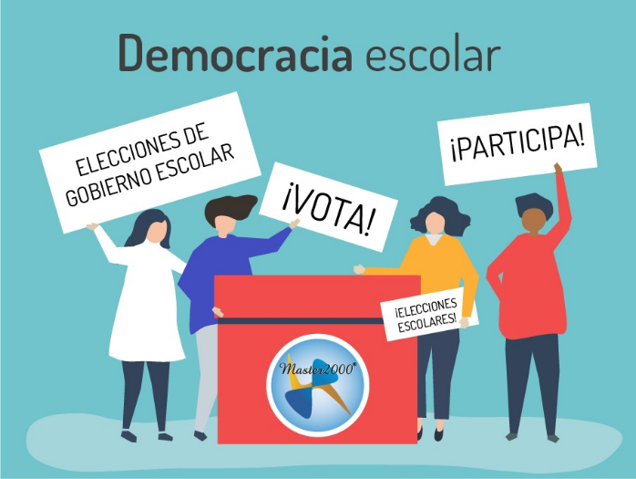
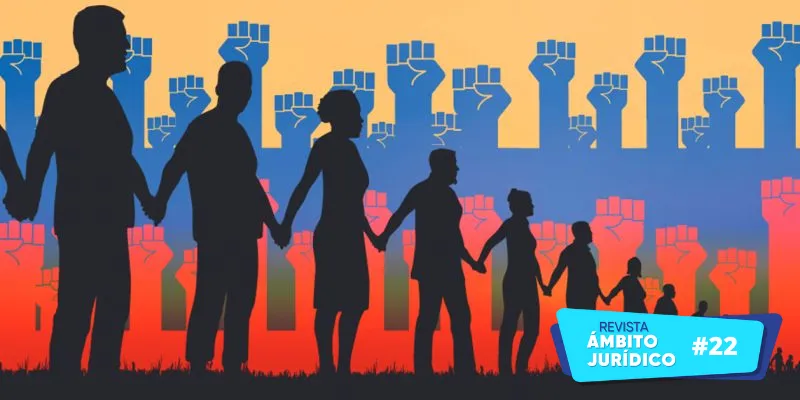
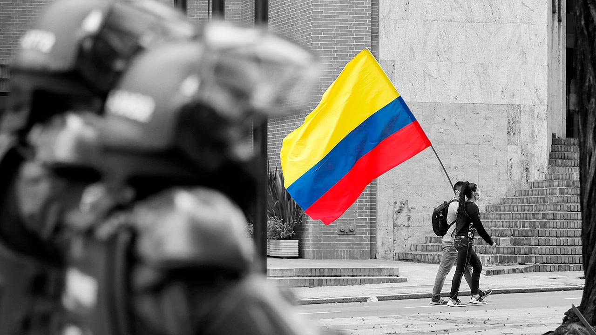
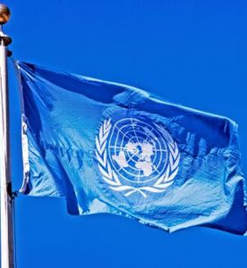
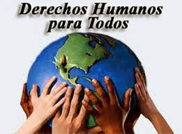

Luciana Jaramillo Del Castillo
Sofia Montoya Gonzalez
DEMOCRACIA ESCOLAR
La democracia escolar es un sistema de gobierno que permite que los estudiantes expresemos nuestras opiniones sin ser juzgados por alguien, en la democracia todos merecemos respeto y una consideración para que nuestras voces sean escuchadas sin importar nuestra edad o nuestras diferencias, siempre podemos dar a conocer lo que pensamos. La democracia escolar se construye por medio de los estudiantes que participan de ella, teniendo en cuenta sus situaciones, vivencias y sensaciones, dependiendo de cómo la consideren, de lo importante que es dicha transformación escolar; aquí evidenciamos lo que nos plantean, normas, derechos y deberes y esa persona que quedo elegida por medio de una participación democrática y pasiva, es aquella que representara a todos los individuos que pertenecen a nuestra institución a nivel de la gobernación escolar.
Por otro lado, el propósito de la democracia escolar es que todos los estudiantes del colegio seamos capaces de crear y dirigir las acciones educativas, mediante unos procesos de participación en la comunidad educativa para una toma de decisiones correcta. En la escuela crecemos y construimos algunos conocimientos que nos van a ayudar en un futuro para hacer una ciudadanía mejor que la de la actualidad.

La democracia se considera como una forma de gobierno justa y de convivencia educativa para vivir en armonía. En una democracia ideal la participación de los estudiantes es el factor que materializa los cambios, por lo que es necesario que entre el consejo estudiantil establezcan un diálogo para alcanzar los objetivos deseados. Las normas que se aplican en la democracia escolar son, la elección del representante de grupo de los estudiantes, la elección del consejo estudiantil (personero, contralor, etc.), la elección de representante de padres de familia, el reconocimiento o la izada de bandera, etc.
GOBIERNO ESCOLAR.
El gobierno escolar es el conjunto de organismos que orientan, dirigen y administran el colegio en los aspectos pedagógicos, académicos, administrativos, culturales y sociales. Este comprende las diferentes instancias y formas de participación en los establecimientos educativos, tanto en colegios públicos como privados, en este los estudiantes también tienen participación en el comité escolar de convivencia.

El gobierno escolar está conformado por el rector, el consejo directivo, el consejo académico y demás formas de organización y participación de la comunidad educativa, promueve el desarrollo afectivo social y moral de los estudiantes por medio de actividades vivenciales. Con el gobierno escolar se puede lograr una sana convivencia tanto en estudiantes como en directivos.

El gobierno escolar es muy importante en una institución ya que es un espacio que fomenta la formación en la participación, la democracia, la responsabilidad de elegir y ser elegido, para representar los intereses de la comunidad educativa y desarrollar la capacidad de liderazgo político en la institución.
REFLEXION…
Este informe nos motiva a pensar en la toma de decisiones referente a todo lo que contiene cada una de las cosas de las que se hablaba anteriormente, aprendemos a tener las capacidades para llevar a cabo cada situación y así entender que el poder lo tenemos la comunidad. Todos podemos tener autonomía, dignidad y liderazgo, para así poder decidir por nuestros pensamientos y decisiones tomadas.
Autores…
Luciana Jaramillo Del Castillo
Sofia Montoya González
L.S MIS NOTICIAS, MIS DERECHOS
DEMOCRACIA MODERNA
La democracia moderna es una toma de decisiones en la que el poder político lo ejercemos nosotros los ciudadanos, dejando en libertad la igualdad sin discriminar a personas con diferentes opiniones y decisiones, la democracia requiere de la participación de todos los miembros y directivos de la sociedad. Este principio es la base de la gobernabilidad, la ética, la creatividad, la autonomía, la libertad de voto, la participación ciudadana y sobre todo el personal representativo en nuestra comunidad.

NOTICIA DE LA DEMOCRACIA MODERNA
El presidente de estados unidos joe Binden hace una cordial invitación a Gustavo Petro el presidente de Colombia, le hace la recibida invitación a través de la red social de twitter diciéndole que va a hacer partícipe de la democracia de la segunda cumbre; y se manifiesta con el siguiente mensaje” ½ Colombia tiene una democracia que se ha ido fortaleciendo. Esta apreciación la comparte el gobierno de EE.UU no es una coincidencia que el presidente @JoeBeiden invite al presidente @petrogustavo a la segunda cumbre democracia” También se le hace el acercamiento con la siguiente carta

Traducción:
La casa blanca
Washington
23 de febrero del 2023
Su excelencia
Gustavo Petro
Presidente de la Republica de Colombia
Bogotá
Querido señor presidente:
Nos encontramos en un punto de inflexión en la historia: las decisiones que tomen nuestras democracias ahora determinarán la dirección del mundo en las próximas décadas. Así que en marzo, Estados Unidos, Costa Rica, los Países Bajos, la República de Corea y la República de Zambia serán los anfitriones de la segunda Cumbre por la Democracia, que reunirá a líderes de todo el mundo para demostrar y discutir cómo las democracias pueden continuar entregar para toda nuestra gente.
En nombre de los coanfitriones de la Cumbre, me gustaría invitarlos a asistir a la sesión plenaria virtual de Líderes el 29 de marzo de 2023 para tener una conversación sincera sobre el poder y el potencial de la democracia en todo el mundo. Además, el 30 de marzo de 2023, su gobierno está invitado a participar en una reunión regional a nivel de ministros para discutir cómo los sectores público y privado pueden trabajar juntos para promover nuestros valores democráticos compartidos y nuestra visión del mundo. Un coanfitrión enviará por separado una invitación formal a este evento y esperamos compartir detalles adicionales con su equipo en breve.
Lo que es más importante, esperamos trabajar con usted y el pueblo de Colombia para continuar construyendo sobre el progreso que logramos durante la primera Cumbre por la Democracia en diciembre de 2021. Juntos, podemos continuar defendiendo la dignidad humana, liberar el potencial humano y lograr la paz y prosperidad para todo nuestro pueblo. Porque como democracias, si trabajamos juntos, nada es más allá de nuestro alcance.
HISTORIA DE LOS DERECHOS HUMANOS EN COLOMBIA
Esta se basa en una de las exigencias más apresuradas que se le hace a los Estados contemporáneos para favorecer formas de organización social que sean útiles para la vida democrática. La Declaración Universal de los Derechos Humanos en 1948 propuso, una nueva configuración que fue: “jurídico-política derivada de la actividad intervencionista del Estado” esta propuesta se fundó en nuevos valores-derechos consagrados por la segunda y tercera generación de derechos humanos y se manifiesta institucionalmente a través de la creación de mecanismos de democracia participativa, de control político y jurídico en el ejercicio del poder y sobre todo, a través de la creación de un catálogo de principios y de derechos fundamentales que inspiran toda la interpretación y el funcionamiento de la organización política.
NOTICIA SOBRE LOS DERECHOS HUMANOS DE COLOMBIA
Nosotros como colombianos nos acostumbramos a una dinámica triste, cada día salen personas diciendo que han matado o asesinado personas como se informa en el tema de derechos humanos en general aplicándolo para Colombia es tener el derechos a la vida lo cual nuestro país no nos brinda ese derecho.
En el cauca y magdalena se está creando un proyecto, el cual se basa en darle pie a una protección de ataques y asesinatos en aquellas regiones, a esto se le puede agregar que tienen unos defensores de derechos humanos, el cual están ejecutados por Diakonia, la Fundación Estrella Orográfica del Macizo Colombiano y la Corporación Desarrollo y Paz magdalena busca quitar los espacios de violencia con unas habilidades de prevención temprana, siendo individual y colectiva. También se mueve el tema con las mujeres asesinatos y demás contra ellas.
DECLARACION UNIVERSAL DE LOS DERECHOS HUMANOS
La declaración universal de los derechos humanos fue acogida el día 10 de diciembre de 1948 por el congreso general de la ONU, estos fueron los resultados de la segunda erra mundial, cuando las naciones unidas se ponen de acuerdo para que los conflictos entre ellas disminuyan y decidieron complementar con una carta donde se garantiza cada derechos de las personas de todo el mundo, el documento se consideraba y poco después de llamo LA DECLARACION UNIVERSAL DE LOS DERECHOS HUMANOS.

NOTICIA SOBRE LA DECLARACION UNIVERSAL DE LOS DERECHOS HUMANOS
En la ONU se ha determinado un nuevo nombramiento el cual se basa en darles la orientación sexual a todas las personas del mundo; esto lo tomamos como un derechos lo cual ya está es un testimonio de libertad de expresión; esta decisión se hizo pública el pasado 28 de junio con esta se busca reafirmar lo que se dijo anteriormente la libertad y de adición la dignidad.
DEFENSORES DE LOS DERECHOS HUMANOS
Sus defensores deben de tener un modo de reconocer la declaracion universal. defender es un derechos legitimo el cual, en leyes de un sensato en derechos a la defensa; los derechos humanos cumplen la funciòn de tener la capacidad de promover la proteccion y realizacion de los derechos humanos.
A quienes desempeñan esta funciòn se les deniomina defensores de los derechos humanos termino ene el que entran ciudadanos y ciudadanas, activistas y siberactivistas, grupos comunitarios familiares de victimas, profecionales, organizaciones, redes y coaliciones.
toda persona puede ejercer aceptablemente la defensa de los derechos humanos de forma individual, en grupo, o atraves de organizaciones en determinadas regiones de todo el pais o a nivel internacional sin importar, su profesion,edad,gemero,nacionalidad o cualquier otra condicion de la persona.
NOTICIA SOBRE LOS DEFENSORES DE LOS DERECHOS HUMANOS
El premio para cuatro defensores de los derechos humanos, este reconocimiento se entrega desde el 2012 el premio de diakonia y la iglesia sueca busca legitimar y políticamente a esos defensores.